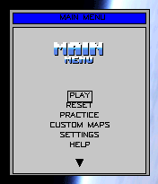
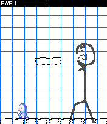
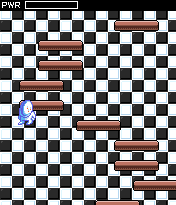
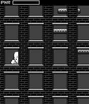
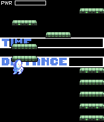
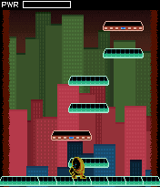
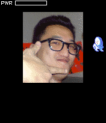

In 2007, at the age of 22, I resigned from my first real software engineering job to enter
an indie gamedev competition: The MOTODEV
Game Developer Challenge. The competition was Motorola's attempt at pulling in developers to build
original games for their then-flagship KRZR. For my
submission, I built Mad Kaz, a vertical platformer backed by a custom game engine.
Mad Kaz is a vertical platformer where you lead the title character through a series of unique levels,
each crazier than the last. Mad Kaz features six zones with between four to ten levels per zone, and eight
different game modes. Built on top of a unique engine, Mad Kaz allows users to create their own levels
with customized game play, cinematics, music, and style. Levels can be uploaded onto phones via either
Bluetooth or the Internet. The source code packages for the engine, levels, and SDK can be found on the
CodeYield Development site.







Contest entry description
Mad Kaz was my first attempt at building a real, non-trivial game. I pieced it together over four
months, spending most of that time building an elaborate game engine rather than the game itself.
Consequently, the game itself was hot garbage. The game engine, on the other hand, turned out pretty
well. It was a programmable UGC platform built from scratch by a lone 22 year-old engineer and successfully
ran on a device with 800kb of heap. It had a virtual machine and assembler, font system, graphical post
processing, downloadable levels, level sharing, windowing system, etc.
Below is the playable game along with anecdotes and artifacts detailing the game's development and struggles.
Use the "Next" and "Previous" buttons to flip forward and backward.
Mad Kaz - The game itself, converted by
AI to be playable inside a browser.
Back around the time of the competition, I was still living in my childhood home with my mother. My
108sqft bedroom was where I built Mad Kaz. I prepared it as a work area by duct taping my mother's thick
faux-fur blanket to the edges of my room's only window. The intention was to minimize distractions
by blacking out the room.
There was a queen-sized box-frame bed with its head centered against the windowed wall. Butted up
against the middle of the right wall was an IKEA HEMNES desk. On top of that desk was a PC tower, a
single flatscreen monitor, and a PS/2 keyboard and mouse.
Except for food and washroom breaks, I spent the entire four months locked in this room building Mad Kaz.
From left to right: Bedroom (realtor photo), IKEA HEMNES desk (product photo), floor plan (bedroom
highlighted)
Test devices (2/10)
I entered the competition late. It launched in late February, but I didn't get started until early April.
Given the time crunch, it didn't make sense to place an online order for an unlocked KRZR and sit around
waiting for it to arrive. Instead, I went to a local store selling imported mobile phones and purchased
the closest device I could find: The Motorola SLVR.
The SLVR and the KRZR had similar features, but the SLVR was under-specced. My thinking at the time was
that if the game ran fine on the SLVR, it would run fine on the KRZR. Alongside the SLVR, I also purchased
a Samsung SGH-D520, just so I could have another device to test with. The shop owner cut the tax off the
price because I bought two phones and paid cash.
From left to right: SLVR (wikipedia photo), SGH-D520 (wikipedia photo), KRZR (wikipedia photo)
KRZR
SLVR
Java version
MIDP 2.0 / CLDC 1.1
MIDP 2.0 / CLDC 1.1
Java heap size
939kb
800kb
Java record store max
512kb
512kb
Persistent memory
20mb
11mb
Display
1.9" TFT, 176x220, 256K colors
1.9" TFT, 176x220, 256K colors
Bluetooth version
2.0
1.2
KRZR vs SLVR spec comparison
Origins of the engine (3/10)
Before coming up with Mad Kaz, I was planning on making an entirely different game. My original idea
was a social top-down 2D MMO with mini-games. I created documents mocking out how it would look and how I
would go about building it.
From left to right: High-level estimates, low-level estimates, UI flow mockup, map mockup
I ditched the MMO idea early on. Even if it all went according to plan, development would have
stretched well past the competition's deadline of early August. What I didn't ditch were the game engine
components highlighted in the work plan. I figured that many of them would still be needed regardless of
the game idea I finally settled on.
Before ultimately deciding on Mad Kaz as the game to build, I spent a week building a font renderer, half
a week on a Huffman compressor, three weeks on a virtual machine and assembler, and one week on image
transformations and real-time audio mixing.
From left to right: Font render test, image rotate test, image post-process test, benchmark
suite
Origins of Mad Kaz (4/10)
Mad Kaz was intended to be a reimagining of the games NS-SHAFT and NS-TOWER, blended into a unified narrative
experience with levels. Each level was to be unique in terms of graphics, audio, and gameplay mechanics. I
came up with a story arc along with a list of levels. The title character, Mad Kaz, would climb up from
inside the Earth and eventually out into space, before encountering an alien boss battle and falling back
down to Earth.
Level Num
Name
Type
Description
1
Internal Core
Climb
Hot wavy screen. Stepping tiles look like they're so hot that they're almost molten. Background
includes a cavernous view of the earth with magma shooting out of the edges, etc.. etc..
2
Below The Crust
No-Drop Climb
Stepping on clay pieces. Nothing to exciting about this zone, covered in a repetitive dirt view.
3
The Surface
No-Drop Climb
Earth's surface. Building windows, etc... Shake every now and then to symbol a missile hit and
flash screen white. Possible rain as well?
4
In The Sky
No-Drop Climb
Zoomed out view of city and buildings in ruins, and missiles piling into buildings. Lots of Wind
fucking with your movements. Hard time going left/right depending on direction of the wind.
5
Above The Chaos
No-Drop Climb
Dusk sun going down. Dark black clouds underneath. Nothing too special.
6
The Horizon
Low-Grav No-Drop Climb
Watching sun go down on earth's horizon Nothing special about this one, just an introduction to
low-grav jumping.
7
Approaching The Ring
Low-Grav No-Drop Climb
Everythings really dark so it's hard to see where you're jumping. At some point earlier heat
vision googles might have been picked up which could be used here.
8
Inside The Ring
No-Drop Climb
Alien ships flying back and forth and general alien ship look.
9
The Boss
Fast Drop
Hard drop down a corridor. The boss does a lot to mess you up, including blanking out your
screen for seconds at a time. There is an electric beam coming down that you must avoid in this
hard drop. Must press action button on specific tiles to damage the enemy
10
The Escape
Fast Drop
The laser beam is still following you even after the boss is dead, you must outrun it.
11
It All Comes Down
Fast Drop
Service tunnel you came up in is collapsing. Stay ahead of collapsing debris.
12
The Aftermath
Free Fall
Free falling back to Earth. You'll see pieces of the tubes used to draw magma from the earth
falling down in the background in a hail of fire. Avoid hitting debris when falling.
Mad Kaz's original level description spreadsheet
Mad Kaz's art (5/10)
To help piece Mad Kaz's levels together, I contracted out to several artists. A chiptunes musician by the
name of Xonic the Fox produced three MIDI tracks. A few basic concept art sketches were created by a high
school classmate, William. Those sketches then went to Mykola, a pixel artist who agreed to do the
important work of reimagining them as pixel art.
Closest surviving archive of Xonic's website (September 2007): Technomancer.
Xonic artifacts
Scaling down Mad Kaz (6/10)
There wasn't enough time to both complete the game engine and build the game's twelve levels. To try and make things work, I
scaled down the levels into six zones. Each zone was to have multiple levels that re-used assets and had
similar game logic.
Of those six zones, two were writeoffs. The first zone was a tutorial and the last zone was nothing more
than an in-game credit sequence cycling through names and photos of friends and people who worked on the
game. The four zones in the middle were the meat of the game.
Old emails from that time show that I wasn't keeping it together. I hadn't properly scoped out the game's
development and dumped too much time into making the engine. My blacked-out bedroom also wasn't
helping. It was impossible for me to tell if it was day or night. I would pass out and wake up at random
hours.
From: Mykola <m***@g***.com> To: Kasra F. <k***@c***.com> Date: Wed, 13 Jun 2007 02:49:06 PDT Subject: Re[2]: Progress?
Man what the hell, don't get pissed.
look I told you I got sick with flu last week, I know you're pissed by it but
so am I - cuz there's nothing I could do about it.
I'm still not 100% but now I can at least use my computer normally so
things should be ok.
I'm absolutely not gonna drop out, that's for sure. Don't panick man!
Please.
NOW. on to the game itself.
I like both the music and the concept art. music is a good fit to the
game I believe.
I attached some gfx you requested first. some floor tiles + the player
sprite.
notes:
[...]
let me know what you think bout these :) and then I'm moving on to
more gfx.
blocks.pngdude.png
Mykola's e-mail responding to my meltdown
Mad Kaz submission (7/10)
July 26th was when the last zone was completed. Bugfixes and tweaks ran through July 27th and 28th. I
submitted Mad Kaz to the competition on July 29th. There were still 2 weeks remaining until the
competition's deadline, but money was running tight and I was burning out.
Mad Kaz's fundamental flaw was that it just wasn't fun to play. It ultimately ended up becoming a game
engine tech demo rather than a game, consisting of a mishmash of unbalanced and narratively disjointed
levels that tried to shove in as many engine features as possible. In a perfect world, I would have spent
those remaining 2 weeks play testing and polishing the game play as much as possible.
Mad Kaz game, converted by AI to be
playable inside a browser.
From left to right: Entry form, entry documentation, source code, playable game
I showed Mad Kaz to a few friends. I also wrote my father, living in California at the time, letting him
know what I had been up to during the four months I'd been unemployed. My friends didn't really understand
or care about the technical merits of the engine. To their credit, the guts don't matter all that much if
the game itself is mediocre. My father, on the other hand, probably understood even less than my friends. I
had a feeling that he thought I was making excuses for being unemployed.
From: MOE F <m***@s***.ca> To: Kaz F <k***@h***.com> Date: Tue, 31 Jul 2007 19:12:07 PDT Subject: Re:
Hi Kasra,
I saw your game, You did a fantastic work, I am very proud of you. With
all hope and good luck to you you are the best, anyway you are a
winner to me.
Cheers!!!!
Kambiz
----- Original Message -----
From: Kaz F <k***@h***.com>
Date: Tuesday, July 31, 2007 4:49 pm
Subject:
To: m***@s***.ca
> Hey Kambiz,
>
> Here's what I've been working on for the past 3 or so months. I
> entered it into the Motorola competition a couple of days ago. It
> was designed to run specific Motorola phones and some other
> phones (Motorola Vxxx, Motorola SLVR, Motorola K1, Samsung SGH-
> D520, etc.. etc..), so you can't play it on your phone.
>
> http://www.codeyielddevelopment.com/madkaz.php
Father's reaction
Post-submission job hunt (8/10)
Back around that time, I was using a spreadsheet to track my bank balance. Money was starting
to run tight. I went into the competition with around $7,500 to my name. By the time I
submitted Mad Kaz in late July, I had around $2,500 left and was on a steep downward trajectory.
Date
Chequing
Savings
Combined
Mar 15
$436.93
$7,001.25
$7,438.18
Mar 30
$366.81
$7,001.25
$7,368.06
Apr 6
$366.81
$5,781.31
$6,148.12
Apr 9
$516.81
$5,631.31
$6,148.12
Apr 13
$29.65
$5,631.31
$5,660.96
Apr 15
$160.96
$5,500.00
$5,660.96
Apr 27
$1,708.62
$5,500.00
$7,208.62
May 6
$1,185.26
$5,500.00
$6,685.26
May 10
$876.76
$5,500.00
$6,376.76
May 30
$876.76
$4,698.41
$5,575.17
Jun 28
$1,876.76
$3,699.28
$5,576.04
Jul 11 16:17
$2,576.61
$3,000.00
$5,576.61
Jul 11 16:20
$539.04
$3,000.00
$3,539.04
Jul 17
$539.04
$2,000.00
$2,539.04
Aug 7
$1,039.04
$1,500.26
$2,539.30
Aug 14
$231.86
$1,500.26
$1,732.12
Aug 19
$631.86
$1,098.26
$1,730.12
Sep 8
$311.58
$1,098.26
$1,409.84
Sep 20 17:15
$311.58
$798.38
$1,109.96
Sep 20 17:16
$611.58
$498.38
$1,109.96
Oct 6 16:27
$611.58
$197.45
$809.03
Oct 6 16:29
$761.58
$47.45
$809.03
Oct 27
$592.09
$47.45
$639.54
Bank spreadsheet
I started looking for work almost immediately after submitting Mad Kaz. I fired off applications to
any place that had a opening, but at the same time I was also trying to leverage Mad Kaz to get hired at a
real game studio. I ended up open-sourcing all of it in the hopes that a technically inclined
reviewer would see enough there to pull me in for an interview.
I applied to four now-defunct studios: Radical Entertainment, Threewave, Blue Castle Games, and IUGO. The
application to Radical Entertainment went nowhere. Threewave had me fill out a questionnaire and scheduled
a phone screen, but ultimately it didn't move forward either.
Blue Castle Games had me come in for an interview. They were hiring a junior
network programmer for Dead Rising 2. It didn't go well. An interviewer had gone through Mad Kaz's
code and made spicy comments in what felt like a failed attempt at shit testing me. Another
interviewer had me whiteboarding how to model zombie movements, and when he jumped in with a question a
competing thought entered my head and I inadvertently told him to shut up. The
interview ended with a brain teaser that had me fumbling my words and freezing up (three-prisoners
hat riddle).
From: Melissa S <m***@bluecastlegames.com> To: 'Kasra F' <k***@***.ca> Date: Mon, 10 Sep 2007 18:28:08 PDT Subject: RE: Interview Next Steps from Blue Castle Games
Hi Kaz,
There will be two interviews - one from 10-11 and another from 11-12.D***
will be there, as will J*** (Technical Director), V***
(Programmer), and T*** (Sr. Programmer). I will meet you when you
arrive and get you settled in.
The interviews will cover a mix of technical and "soft" skill questions. I
can't tell you the exact questions they will ask, but I can tell you that
they will ask you to do some coding work on a white board in addition to
answering questions orally.
Hope that helps! I will send you the NDA and directions tomorrow morning.
Have a good night!
Blue Castle interview invitation
IUGO had me come in for an interview after a personal appeal to the CEO. It went well. The
atmosphere was relaxed. A college acquaintance was working there. One of the interviewers had me sit down
with a stack of papers full of game coding and design questions. When I finished, he tossed them aside,
saying something to the effect of "I don't need to look at it. I know you know your stuff."
The last part of the interview had me chatting with the CEO. He had either given me an offer or was on
the verge of giving one, but I ended up walking away. I don't recall exactly why. It may have been because
I was actively interviewing at Blue Castle Games, or I may have been feeling too full of myself and
gunning for a more senior role, or it may have been because the office felt uncomfortably bright. It was
unusually sunny that day. IUGO's office space let a lot of that sun in. I had spent most of my time
building Mad Kaz in my blacked-out bedroom.
From: Hong-Yee W <h***@iugome.com> To: 'Kaz F' <k***@h***.com> Date: Wed, 05 Sep 2007 13:57:30 PDT Subject: RE: Application for J2ME/BREW Programmer
Hi Kazra,
Let's try this again. Please come in for an interview tomorrow (6 Sep) at
11am. Our office address remains unchanged - see below.
[...]
From: Kaz F [mailto:k***@h***.com]
Sent: Thursday, August 02, 2007 3:20 PM
To: h***@iugome.com
Subject: RE: Application for J2ME/BREW Programmer
Hey Hong,
I'm just getting in touch with you to give you an update on my status. I
gave in my resignation at AirG a little while after initially sending in my
resume to IUGO so that I could take part in the Motodev game developer
challenge. I made sure to incorporate before I made my submission (strictly
for liability reasons). You can find the game and source code (GPLv3) on my
website. If any other positions at IUGO open up that you think I'm qualified
for, don't hesitate to give me a shout.
I've attached my resume in case you want to glance it over again.
- Kaz
From: h***@iugome.com
To: k***@h***.com
Subject: RE: Application for J2ME/BREW Programmer
Date: Mon, 20 Nov 2006 13:37:58 PST
Hi Kasra,
Please come in for an interview tomorrow (20 Nov) at 3pm. Our office is in
Yaletown: [...]
-----Original Message-----
From: Kaz F [mailto:k***@h***.com]
Sent: Sunday, November 19, 2006 5:51 PM
To: h***@iugome.com
Subject: Application for J2ME/BREW Programmer
Dear IUGO HR Department,
This letter is to express my interest in discussing the mobile game
developer position posted on the IUGO website. [...]
IUGO interview invitation
In the end, my money was drying up. I had around $800 left in the bank and so I accepted a job at a
company that made calendar software. The salary was around 15% lower than that of the job I resigned from
to enter the competition.
A few weeks after starting, I revisited the MOTODEV
Game Developer Challenge website. Mad Kaz hadn't won, nor was it one of the finalists. I never heard
from the people running the competition about their thoughts on Mad Kaz or how it ranked against other
games in the competition.
Engine postmortem (9/10)
Mad Kaz's engine was the culmination of my experiences with gaming and coding, starting from early
childhood experiments on the first family PC my father purchased in the early 1990s all the way up to the
job I resigned from to enter the competition.
As a game, Mad Kaz failed. As a game engine, it succeeded at doing something few at the time had
attempted: It was a programmable UGC platform for the resource-constrained mobile devices of that era. The
individual components of the engine weren't all that unique or original. Doom had already popularized pack
files, Quake had already popularized scripting, QuakeWorld had already popularized in-game level
downloads, countless games performed dynamic audio mixing and graphical post-processing, etc. It was the
collection of those individual components together under a single umbrella, running successfully on a
Java device with 800kb of heap, that made for something special.
Many of the individual components within Mad Kaz were born out of my experiences at my former employer. The R&D
head at the time was forgiving enough to look past my attitude problem and let me work under him. He made
several attempts at a scriptable platform for their mobile apps. Those scriptable platforms, along with
Java's virtual machine and Quake's virtual machine, became the inspiration for Mad Kaz's virtual machine
and assembler.
Mad Kaz's PNG palette editing module was inspired from overhearing a watercooler discussion one day at
work. A
senior engineer mentioned how someone they knew wrote code to go in and edit a PNG's palette at runtime.
After hearing that, I visited a now-defunct website known for
indexing file format specifications, pulled out the specifications for PNG, and spent a few days at
work trying to come up with interesting things to do with palette modifications.
Mad Kaz's image manipulation functions were inspired by a college classmate who also worked at the same
company. While sitting in a college
computer lab one day, he wrote code to resize an image using bilinear scaling. We didn't know that it was
called bilinear scaling at the time, but his idea of pixel-to-pixel gradients was the seed for Mad Kaz's
image rotation, scaling, and post-processing effects.
Mad Kaz's image manipulation functions required rational numbers, but most mobile phones at that time
didn't include a hardware floating point unit. Somewhere along the way, I had learned about fixed-point
math and lookup tables. I used fixed-point math to implement a progress bar in one of my employer's mobile
apps, and I also used it to perform the image manipulation math in Mad Kaz.
The list goes on. It was all prior art that, at some point or another, I had experienced and internalized
in some way.
Apr 3: Empty repository.
Apr 11-14: Built Hershey font conversion and rendering, then added word wrapping,
resizing, and Huffman compression.
Apr 21-May 3: Added an assembler and VM instruction set, generalized the VM, and
built J2ME benchmarks and runtime support.
May 4-7: Added WAV mixing and image/PNG tools, palette replacement, graphics
management, and tiling.
May 8-12: Added game canvas, sprites, scenes, music, logo animation, and text
handling; adjusted loading and key-repeat behavior for phones.
May 13-31: Added menus, windows, dialogs, persistent storage, and image rotation;
refined text layout and fixed device/input bugs.
Jun 2-4: Added Micro3D-related tools and scrolling/physics code; comments note
unfinished gravity and offset behavior.
Jun 4-14: Added the first large Mad Kaz implementation, including its VM, gameplay,
collisions, and image/resource handling. Later changes renamed the play canvas and optimized
performance; one replaces many StringBuffer UI values with char[].
Jun 14-19: Expanded game-specific VM operations for state, input, effects, and
timers. Added custom-map UI and began network access.
Jun 20-28: Added network map downloads, local storage and browsing, and tools to
package downloadable levels from XML. Extended gameplay controls, sprites, and graphics parsing.
Jul 1-3: Prototyped Bluetooth multiplayer and menus, then added a credits sequence
and gameplay/timing fixes.
Jul 5-10: Added an automated-scene engine and tests, then connected scene behavior
to the game and SDK.
Jul 12-21: Added configuration storage, level selection/unlocks, and substantial
zone and level content.
Jul 22-27: Removed the unplayable multiplayer path, added peer-to-peer custom-map
transfer, and optimized level packaging with an indexed combiner. Reorganized zone 6 as zone 5.
Jul 27-28: Revised setup, credits, copyright/license text, and packaging; removed
map compression; reorganized into trunk/tags and created MOTODEV/alpha snapshots. Added a downloadable
"Space Quest" map.
Development timeline, summarized by AI from the original repository
Incorporating (10/10)
One unimportant but mildly interesting fact about Mad Kaz and the competition was that I incorporated a
company to enter the competition with: CodeYield Development Inc. I contracted out the company's website
design to a high school friend and got myself a fax number. For some reason, I thought that people
wouldn't take the company seriously unless it had a fax number.


_-_Front_(Open)_1280w_Q70_thumbnail.avif)


![Floor tile graphics]()